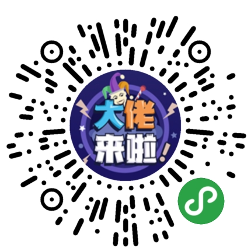
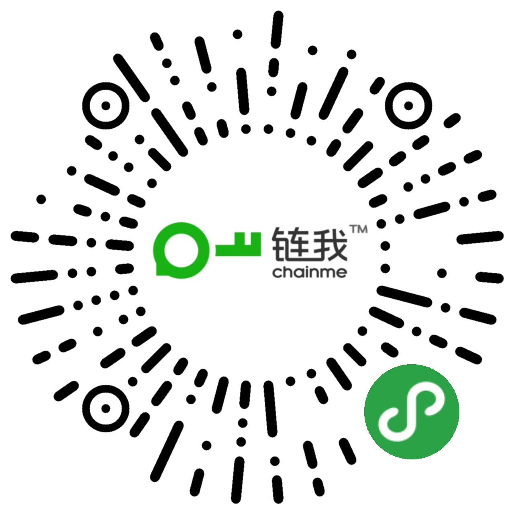

-
- 教育背景
- 牡丹江师范学院本科(2010-2014)
- 工学院电气工程及其自动化专业
- GitHub: https://github.com/hw1024
-
- 个人技能
- 熟练使用HTML,CSS,JS等网页制作技术
- 熟练使用H5,CSS3新特性以及Storage,ES6,ES7
- 掌握Css类库Sass技术、Less技术、Gulp构建化工具
- 掌握vue.js、sea.js、require.js、zepto、bootStrap等流行框架
- 熟练使用Sublime，VSCode相关开发工具,Git版本管理,了解Webpack自动化构建工具
- 熟练使用ajax,WebSocket技术，熟悉前后端交互
- 熟练小程序开发,并有相关项目经验
- 熟悉node,express,mysql搭建基本项目，pm2项目简单部署
- 了解D3，three.js等，学习能力强
- 了解react.js
-
- 工作经历
-
快上线（北京）科技有限公司(2016.03-至今)
- 职位名称：前端主管
- 技术栈：Seajs、Requirejs、Zeptojs、bootStrap、vue.js、Sass等
-
北京新片场传媒股份有限公司(2014.06-2016-03)
- 职位名称：WEB前端工程师
- 技术栈：HTML，CSS，HTML5，CSS3，jQuery等
- 近期项目
-
中普金服
中普金服银行存管版PC+WAP+APP 已上线(2016.12-至今)
- 主要技术： Seajs、Requirejs、Zeptojs, jQ, Sass等
- 项目职责：
- 负责项目页面的前期搭建和后期项目维护；
- 配合完成与后端的接口对接，项目框架选型及进度把控；
- 公共方法封装，项目bug修复；
- 新需求迭代开发，整理项目文档；
-
赚个房
赚个房PC+WAP+APP 已上线(2017.12-至今)
- 主要技术： Seajs、vuejs, jQ, Sass等
- 项目职责：
- 负责项目页面的前期搭建项目选型；
- 配合完成与后端的接口对接，项目框架选型及进度把控；
- 作为前端领头人，采用Vue框架重构系统
-

大佬来了-小程序 已上线 (2018.10-2018.10)
- 项目描述：答题投票类小程序
- 主要技术：wxml、wxss、js等
- 项目职责：
- 负责整个项目选型及页面的开发；
- 项目采用iview weapp UI框架；
- 分享保存图片到朋友圈功能以及答题功能开发；
- 新需求迭代开发，整理项目文档；
-

链我-小程序 未上线 (2018.10-2018.11)
- 项目描述：知识付费类小程序
- 主要技术：wepy、wxml、wxss、js等
- 项目职责：
- 负责整个项目选型及页面的开发；
- 项目采用wepy框架进行开发打包处理以及iview weapp UI框架；
- 采用小程序API进行图片视频直传阿里云以及分享保存图片到朋友圈功能；
-
以太坊钱包（福利币钱包）
- 项目描述：keythereum钱包
- 主要技术： vue.js, keythereum.js, eth-lightwallet.js, web3.js等
- 项目职责：
- 页面搭建及功能实现；
- eth-lightwallet.js生成助记词，以及钱包地址再通过keythereum.js生成keystore和私钥；
- 通过keythereum.js实现地址导入功能（助记词导入，keystore导入，私钥导入）；
- 通过web3.js实现钱包地址余额查询及转账相关功能；
-
赚个车-小程序 未上线
- 项目描述：赚车类小程序
- 主要技术：wxml、wxss、js等
- 项目职责：
- 负责整个项目选型及页面的开发，完成与后端的接口对接；
- 分享保存图片到朋友圈功能以及相关功能开发；
- 新需求迭代开发，整理项目文档；
-
线上签-安信签后台签约系统 (2018.4-2018.8)
- 主要技术：html、css、js、bootStrap等
- 项目职责：
- 线上签约功能开发；
- 协助后台接口对接以及公共方法封装；
- 负责整个项目后台页面以及部分内嵌APP页面的开发；
-
投好车WAP+APP
- 主要技术： Requirejs、Zeptojs, jQ等
- 项目职责：
- 负责项目页面的前期搭建和后期项目维护；
- 配合完成与后端的接口对接，项目框架选型及进度把控；
- 公共方法封装，项目bug修复；
- 新需求迭代开发，整理项目文档；
-
北京新片场传媒股份有限公司官网(2014.06-2016-03)
- 主要技术：HTML，CSS，HTML5，CSS3，jQuery等
- 项目职责：
- 官网页面开发
- 活动页面添加，并进行页面改版；
- 优化网站安全性能，前后端代码优化；
- 自我评价
- 对WEB开发富有激情和责任心，具备很强的动手能力。能够高效的完成任务，并能承受一定的工作压力。技术视野广阔，乐于不断学习新知识与新技术，并能应用到实际中。既然选择了，就会坚持下去，不管最后结果如何，这是对企业，也是对自己的一份责任